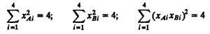
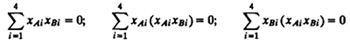
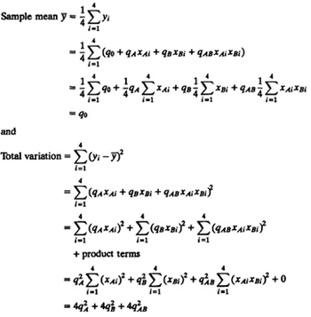
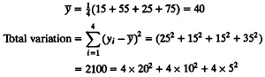

Derivation 17.1 The model used in a 22 design is
yi = q0 + qAxAi + qBxBi + qABxAixBi
Columns xA, xB and xAxB of the design matrix in Table 17.3 have the following properties:
- 1. The sum of entries in each column is zero:

- 2. The sum of the squares of entries in each column is 4:

- 3. The columns are orthogonal since the inner product of any two columns is zero:

These properties allow us to compute the total variation as follows:

The product terms in the preceding equation add to zero due to the orthogonality of the columns.
Example 17.2 In the case of the memory-cache study

Thus the total variation is 2100, of which 1600 (76%) can be attributed to memory, 400 (19%) can be attributed to cache, and only 100 (5%) can be attributed to interaction.
The percentage of variation helps the experimenter decide whether or not it is of value to further investigate a factor or interaction. For example, in the memory-cache study the 5% variation due to interaction seems negligible. The first factor worth exploring further is the memory size, which explains 76% of the variation. The cache is less important because it explains only 19% of the variation.
Case Study 17.1 Two memory interconnection networks called Omega and Crossbar were compared using simulation. Two different memory address reference patterns called Random and, Matrix were used. As the name implies, Random reference pattern addresses the memory with a uniform probability of reference. The second pattern simulated a matrix multiplication problem in which each processor (of a multiprocessor system) is doing a part of the multiplication. Tb keep the analysis simple, many factors that were known to affect the performance of the interconnection networks were kept fixed at one level as follows:
- 1. Number of processors was fixed at 16.
- 2. Queued requests were not buffered but blocked.
- 3. Circuit switching was used instead of packet switching.
- 4. Random arbitration was used instead of round robin.
- 5. Infinite interleaving of memory was used so that there was no memory bank contention.
A 22 factorial experimental design was used. The symbol assignment is shown in Table 17.4. Three different performance metrics were computed using simulation: average throughput (T), 90% transit time in cycles (N), and average response time (R). The measured performance is shown in Table 17.5. The effects, computed using the sip table method, are shown in Table 17.6. The table also contains percentage of variation explained.
| TABLE 17.4 Factors Used In the Interconnection Network Study
|
|
| Symbol
| Factor
| Level –1
| Level 1
|
|
| A
| Type of network
| Crossbar
| Omega
|
| B
| Address pattern used
| Random
| Matrix
|
|
| TABLE 17.5 Measured Responses in the Interconnection Network Study
|
|
|
|
| Response
|
| A
| B
| T
| N
| R
|
|
| –1
| –1
| 0.6041
| 3
| 1.655
|
| 1
| –1
| 0.4220
| 5
| 2.378
|
| –1
| 1
| 0.7922
| 2
| 1.262
|
| 1
| 1
| 0.4717
| 4
| 2.190
|
|
| TABLE 17.6 Mean Effects for the Interconnection Network Study
|
|
|
| Mean Estimate
| Variation Explained
(%)
|
| Parameter
| T
| N
| R
| T
| N
| R
|
|
| q0
| 0.5725
| 3.5
| 1.871
|
|
|
|
| qA
| 0.0595
| –0.5
| –0.145
| 17.2
| 20
| 10.9
|
| qB
| –0.1257
| 1.0
| 0.413
| 77.0
| 80
| 87.8
|
| qAB
| –0.0346
| 0.0
| 0.051
| 5.8
| 0
| 1.3
|
|